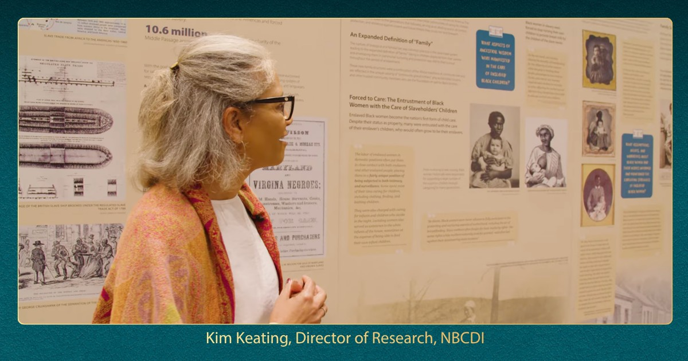
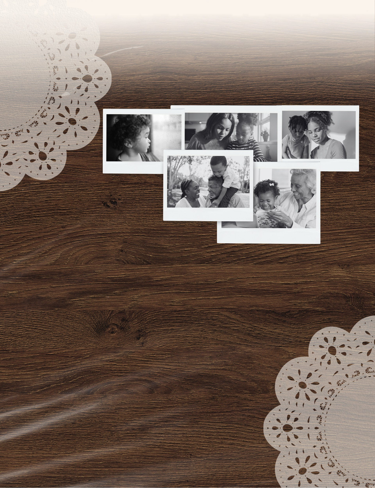

The future of child care is already growing in our families, our neighborhoods, and the people we trust.
Journey with Black caregivers and families as they honor a lineage of care, share what children receive in the homes and communities that know them best, and imagine a future where this essential care is recognized and resourced.
“Learning to cook from my grandma in the kitchen as I spent summers with her. Learning the newest dances from older cousins, learning songs from aunts and uncles. Just the entire sense of community I had growing up that I wish to pass on to my children.”
Featured ParentAbout
Maybe it was a grandmother who kept you through the summer. An auntie who knew how to settle you. An older cousin who taught you the newest dance. A neighbor who made room at the table. A family friend who became family.
This is Family, Friend, and Neighbor care: the care that surrounds a child with people who know their rhythms, honor their identity, and help them grow. In Black communities, it is also a living tradition shaped by shared responsibility, trust, and love across generations.
For many Black families, it is a deliberate choice, built on trust and familiarity.
Source: National Survey of Early Care and Education, 2019
Watch
An Afrofuturist celebration of Black Family, Friend, and Neighbor care and the people building its future.
Legacy
Black Family, Friend, and Neighbor care reaches beyond any single home or generation. Its roots extend to communal caregiving traditions in precolonial Africa, where children were held within networks of kinship and shared responsibility.
That legacy lives in everyday acts: teaching a child a family recipe, passing down songs and stories, tending to a child's hair, recognizing a gift before the child has words for it. This care is cultural infrastructure. It carries a people's memory forward.

“My grandmother took care of me, and she took care of my son and daughter. Now I'm able to take care of my grandchildren, and I'm able to tell them how great they are and how they come from great people. Not just us, but our culture. It's rich.”
Featured FFN CaregiverCommunal caregiving and expanded kinship center children within a village of shared responsibility.
Black families preserve safety, knowledge, culture, and connection through changing conditions.
Families continue to choose trusted caregivers who know their children and respond to their individual needs.
Caregivers and families shape systems that honor their expertise, autonomy, and vision.

What Caregivers and Families Shared
NBCDI's Reimagining Child Care initiative brought together 51 Black FFN caregivers and parents across Detroit, Iowa, Nashville, and Philadelphia.
“When I'm with my children, I look for their gifts, their qualities, and I cultivate that.”
Featured FFN Caregiver“My grandma is really my saving grace. I just appreciate that she's there so I can have a little break.”
Featured Parent“Caregiving like that is an extension of home. This child doesn't have just one home. The whole community around that child can be that child's home.”
Featured FFN Caregiver“When Grandpop was able to step in, it was a good thing. I knew he was safe. They were safe.”
Featured ParentTake Action
You can help make Black Family, Friend, and Neighbor care visible in every place where child care is discussed and decided.
Who in your circle needs to see this film? Invite them to watch it, then talk about it together.
Bring the film to your community using NBCDI's screening resources.
Host a ScreeningGet the research, history, and context behind The Care Next Door in one shareable document.
A Reclamation of Black CareSupport NBCDI's efforts to shift narratives and build child care systems where Black children, families, and caregivers can thrive.
Support NBCDIUpcoming Screenings
A screening can open a deeper conversation about who provides care, what families value, and how public systems can support trusted caregivers without diminishing their autonomy.
A screening of The Care Next Door during the Congressional Black Caucus Foundation ALC, followed by the introduction of NBCDI's Commission on Black Child Safety.